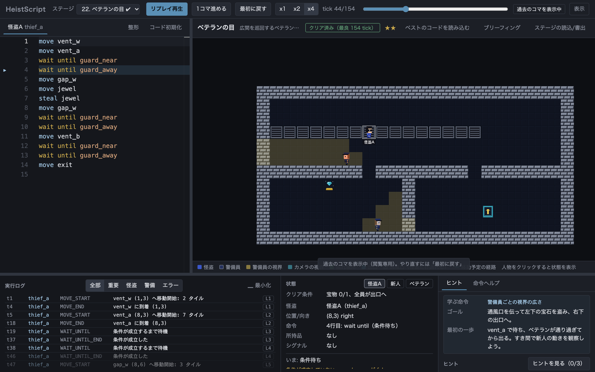
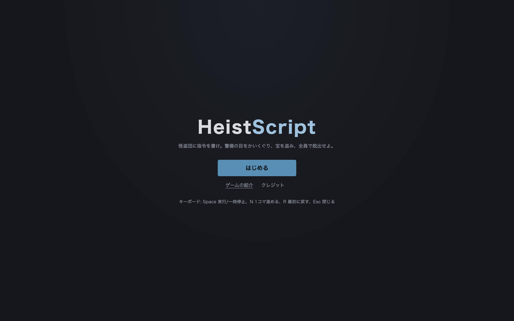

どんなゲーム？
HeistScript は「考えるステルスゲーム」です。怪盗をキーで操作するのではなく、短いスクリプトで指令を書きます。 実行ボタンを押すと怪盗はその通りに動き、警備員の巡回や監視カメラの回転は毎回まったく同じ。 見つかったら、ログを読んで「どの tick に、なぜ見つかったか」を確かめ、コードを直してもう一度。乱数はありません。
# ロッカーで隠れ、警備員が離れたら宝石へ move locker_a hide wait until guard_away move jewel steal jewel move exit
命令は move・wait・hide・steal など十数個だけ。
wait until guard_away のように「条件が成立するまで待つ」書き方が中心で、プログラミングが初めてでも読めます。
エディタには補完とヒント、エラーの直し方が出ます。1 コマずつ進めたり、タイムラインを戻して見返したりもできます。
できること
隠れる・待つ・盗む
ロッカーに隠れ、巡回の周期を読み、背後から近づく。基本はこの 3 つ。
眠らせて運ぶ
背後から警備員を気絶させ、担いで物陰に隠す。見つかれば仲間が起こしに来る。
カメラ・レーザー・タイマー扉
回転する監視カメラ、周期で作動するレーザー、開閉する扉。周期を数えて wait を合わせる。
二人・三人で連携
スイッチを押す役、おとり役、盗む役。signal で合図を送り合って順番を合わせる。
通風口・鍵・物音
怪盗だけが通れる通風口、施錠扉を開けるカードキー、distract で立てる物音。
全 59 ステージ
7 章構成。入門の「考えたらいける」面から、四つの周期を重ねる上級面まで。

こんな人に
- パズルゲームが好きで、「あと 1 tick 早ければ」をじっくり考えるのが楽しい人
- プログラミングの「待つ・条件分岐・くり返し」を、手を動かしながら体で覚えたい人
- 音も派手な演出もない、静かに集中できるゲームを探している人
遊び方
- ゲームを開く。タイトルで「はじめる」を押し、ステージ 1 を選ぶ。
- 作戦ブリーフィングで「学ぶ命令」「ゴール」「最初の一歩」を読む。
- 左のエディタに書いて「実行」。見つかったら下のログで原因の tick を確かめて直す。
- 行き詰まったら「ヒント」を 3 段階まで開ける。最後の段階は実行できるサンプルコード。
技術
TypeScript + React + Phaser 3 + Monaco Editor。固定 tick の決定的シミュレーションと、独自の小さな言語 HSL（Lexer / Parser / VM）で動いています。 ドット絵はすべてコードで生成したオリジナル素材。プレイヤーのコードは端末の外に送られません。 ソースコードは GitHub で MIT License として公開しています。